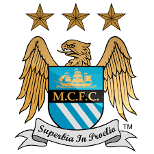

MANCHESTER CITY
ANTES
AHORA

Estos son los equipos que clasificaron a la suguiente champions league, conoceremeos un poco de la historia de como eran sus logotipos antes y ahora para ir adentrandonos a esta nueva temporada.
los cuatro equipos clasificados son: -MANCHESTER CITY -ARSENAL -MANCHESTER UNITED estos cuatro equipos representaran a la PREMIER LEAGUE en la champions 2023-2024.